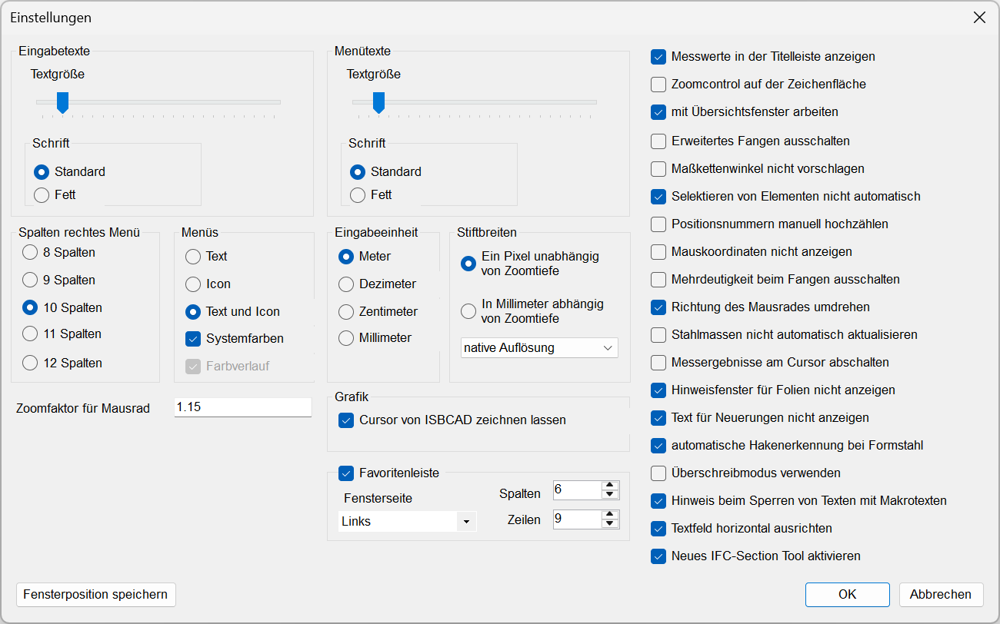
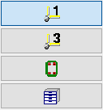
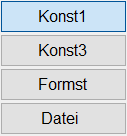
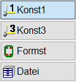
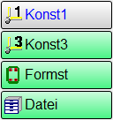
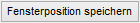
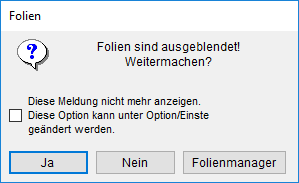

")
Konfiguration der Programmoberfläche und des Programmverhaltens. Öffnet den Dialog Einstellungen.
Optionen im Dialog "Einstellungen"
 |
Textgröße
Die Textgröße kann mit den Schiebereglern eingestellt werden. Die Änderung ist sofort in der Programmoberfläche sichtbar.
Der Schieberegler für die Textgröße der Menütexte steuert auch die Textgröße der Verknüpfungen in der Favoritenleiste.
Schrift
Wählen Sie zwischen der Standardschrift oder der Einstellung Fett.
Breite des Funktionsbereiches (Menüpaletten). Hier können Sie die Breite der Schaltflächen im Funktionsbereich wählen.
Darstellung der Schaltflächen.
Icons |
Texte |
Icons und Texte |
Individuelle Farben mit Farbverlauf |
 |
 |
 |
 |
Systemfarben
|
Aktive und nicht-aktive Schaltflächen werden entsprechend den Microsoft-Windows-Einstellungen dargestellt. |
|
Schaltflächen werden entsprechend den ISBCAD Einstellungen unterschieden Farbverlauf Nur wenn die Option Systemfarben deaktiviert ist: Schaltflächen werden mit Farbverlauf dargestellt. |


Auswahl der Eingabeeinheit. (Einheit für die bei der Abfrage einzugebenden Längen- oder Abstandswerte).
Darstellung von Zeichenelementen (Linien, Kreise, Texte), der Zeichenmarke, Fangmarken und des Cursors am Monitor.
Auf Monitoren mit hoher Auflösung (z. B. 4k/UHD) kann es sinnvoll sein, mit der Option halbierte Auflösung zu arbeiten. Die native Auflösung des Monitors (z. B. 3840 x 2160) wird halbiert, wodurch z. B. dünne Linien dicker dargestellt werden und besser sichtbar sind.
Ein Pixel unabhängig von Zoomtiefe
Stellt Zeichenelemente, Zeichenmarke, Fangmarken und den Cursor mit einer Breite von 1 Pixel (native Auflösung) oder 2 Pixel (halbierte Auflösung) dar.
In Millimeter abhängig von Zoomtiefe
Stellt Zeichenelemente mit ihrer tatsächlichen Stiftbreite dar. Zeichenmarke, Fangmarken und Cursor werden mit einer Breite von 1 Pixel (native Auflösung) oder 2 Pixel (halbierte Auflösung) dargestellt.
Grafik
Cursor von ISBCAD zeichnen lassen
Diese Option wirkt sich nur aus, wenn der große Cursor aktiviert ist.
|
Der kleine und große Cursor liegen exakt übereinander, sodass bei Mausbewegungen der "Nachzieheffekt" zwischen dem kleinen und großen Cursor verhindert wird. Je nach Hardwarekonfiguration kann es zu einem Ruckeln oder Verzögerungen bei Mausbewegungen kommen (s. empfohlene Systemanforderungen). |
|
Ruckeln oder Verzögerungen bei Mausbewegungen werden verhindert, jedoch tritt der "Nachzieheffekt" auf. |
In der Favoritenleiste können Sie häufig genutzte Funktionen ablegen. Aktivieren Sie die Checkbox, um die Favoritenleiste auf der Zeichenfläche einzublenden, oder deaktivieren Sie die Checkbox, um die Leiste auszublenden. Beim Ausblenden bleibt Ihre aktuelle Zusammenstellung der Schaltflächen erhalten und wird beim erneuten Einblenden wieder angezeigt.
Wenn Sie die Fensterseite, die Spalten- und Zeilenanzahl ändern, wird die Favoritenleiste in der Zeichenfläche sofort an die neuen Einstellungen angepasst.
Fensterseite
Durch Auswahl können Sie die Favoritenleiste entweder am linken oder rechten Rand der Zeichenfläche platzieren.
Spalten
Bestimmt die Anzahl der Spalten. Es können maximal zwischen 57 und 61 Spalten eingegeben werden (abhängig von der Option Spalten rechtes Menü).
Zeilen
Bestimmt die Anzahl der Zeilen. Es können maximal 31 Zeilen eingegeben werden.
Anmerkungen:
·Die maximale Spalten- und Zeilenanzahl ist unabhängig von der Größe des Programmfensters und der Bildschirmauflösung. Wird das Programmfenster bei maximaler Spaltenanzahl verkleinert, so wird die Favoritenleiste am rechten Rand angeschnitten und damit nicht vollständig angezeigt. Bei einer vertikalen Verkleinerung oder Vergrößerung des Programmfensters werden die Schaltflächen entsprechend skaliert.
·Sind alle Spalten einer Zeile belegt und die Spaltenanzahl wird verringert, wechselt die Anzeige zur nächst kleineren Darstellungsform (max. Icon). Abhängig vom verfügbaren Platz werden die Verknüpfungen entweder in die nächst freien Zellen verschoben oder nicht mehr in der Leiste angezeigt. Gleichermaßen verhält es sich bei einer Verringerung der Zeilenanzahl. Stellen Sie die ursprüngliche Spalten- und/oder Zeilenanzahl wieder her, erscheinen die Verknüpfungen in der zuvor gewählten Darstellung.
Siehe auch: Favoritenleiste
Weitere Einstellungen
Einstellung für die Empfindlichkeit der Drehbewegung. Je größer der Wert, desto größer wird der Unterschied zwischen den Zoomstufen.

Speichert Fensterposition und -größe; ISBCAD wird beim nächsten Start an derselben Position angezeigt.
Messwerte in der Titelleiste anzeigen
Statt in einem gesonderten Fenster werden die Ergebnisse der Funktion Messen in der Titelleiste angezeigt. In beiden Fällen können die Inhalte der Werte direkt durch Klick mit der linken Maustaste in die aktive Eingabe übertragen werden.
Zoomcontrol auf der Zeichenfläche
Blendet links oben (unter der Eingabezeile) die Zoomcontrol-Funktion ein.
mit Übersichtsfenster arbeiten
Im unteren rechten Bereich des Bildschirms wird eine Übersicht der kompletten Zeichnung angezeigt. Entfernen Sie den Haken, wenn das Übersichtsfenster ausgeblendet werden soll.
Siehe auch: Übersichtsfenster
Erweitertes Fangen ausschalten
Es werden nur Linienanfang und -ende erkannt, aber keine Mittel- und Schnittpunkte.
Siehe auch: Elementfang.
Maßkettenwinkel nicht vorschlagen
Der Winkel (0° oder 90°) wird nicht automatisch vorgeschlagen.
Selektieren von Elementen nicht automatisch
Auswahl über Rechteck ist Standardeinstellung.
Siehe auch: Auswahlfunktionen.
Positionsnummern manuell hochzählen
Wenn Sie kein automatisches Weiterzählen der Positionsnummern wünschen, setzen Sie hier einen Haken.
Mauskoordinaten nicht anzeigen
In der Statusleiste werden die laufenden Mauskoordinaten angezeigt. Setzen Sie einen Haken in die Checkbox, um die Funktion abzuschalten.
Mehrdeutigkeit beim Fangen ausschalten
Übereinanderliegende Elemente werden nicht mehr zur Auswahl angeboten.
Siehe auch: Elementfang.
Richtung des Mausrades umdrehen (erfordert einen Neustart des Programms)
In der Standardeinstellung bewegt sich das Bild in die gleiche Richtung, in die das Mausrad gedreht wird. Sie können die Richtung umkehren.
Stahlmassen nicht automatisch aktualisieren
Die Anzeige in der Statusleiste wird normalerweise immer sofort aktualisiert. Setzen Sie einen Haken in die Checkbox, um die Funktion abzuschalten. Wenn diese Funktionalität ausgeschaltet ist, muss auf die Anzeige geklickt werden, um den aktuellen Stand der Stahlmassen anzuzeigen.
Messergebnisse am Cursor abschalten
Während die Funktion Messen aktiv ist, können am Cursor die X-, Y- und L-Differenzen zum ersten angeklickten Punkt angezeigt werden. Setzen Sie einen Haken in die Checkbox, um die Funktion abzuschalten.
Hinweis Fenster für Folien nicht anzeigen
Setzen Sie einen Haken, wenn kein Hinweis-Fenster bei ausgeblendeten Folien angezeigt werden soll.
 |
Text für Neuerungen nicht anzeigen
Nach dem Start von ISBCAD werden die aktuellen Neuerungen in einem Fenster angezeigt. Setzen Sie einen Haken, wenn nach Programmstart die Neuerungen nicht angezeigt werden sollen.
automatische Hakenerkennung bei Formstahl
Aktiviert oder deaktiviert die automatische Anpassung der Hakenlängen. In der Standardeinstellung ist diese Option aktiviert. Diese Einstellung wird nicht im Anwenderprofil gespeichert.
Setzen Sie einen Haken, wenn Sie die Möglichkeit haben möchten, die Haken an der Auszugsform an einen neuen Stabdurchmesser anzupassen.
Siehe auch: Hakenlängen an den Stabdurchmesser anpassen
Überschreibmodus verwenden
Setzen Sie bei der Option einen Haken, um Texteingaben im Überschreibmodus zu beginnen. Ist der Haken nicht gesetzt (Auslieferungszustand), wird standardmäßig der Einfügemodus verwendet.
Hinweis beim Sperren von Texten mit Makrotexten
In [Konst 3 | EleAtr | ElSper] erscheint eine Meldung, wenn Makrotexte gesperrt werden sollen. Entfernen Sie hier den Haken, falls diese Meldung nicht mehr erscheinen soll. In der Standardeinstellung ist diese Option aktiviert.
Textfeld horizontal ausrichten
Setzen Sie bei der Option einen Haken, um beim Bearbeiten und Ändern gedrehter Textfelder, diese automatisch horizontal am Bildschirm auszurichten. Dadurch wird temporär die Zeichenfläche gedreht, bis Sie die Bearbeitung abschließen.
Ist der Haken nicht gesetzt, werden Textfelder im gewählten Drehwinkel auf der Zeichenfläche dargestellt.
Siehe auch: Textfeld ausrichten
Neues IFC Section Tool aktivieren
Wenn der Haken gesetzt ist, wird mit [Datei | IFC-ST] das IFC Section Tool geöffnet, das ab ISBCAD 2026 verfügbar ist. Bei Bedarf können Sie zum vorherigen IFC Section Tool wechseln, indem Sie den Haken entfernen.
Siehe auch: